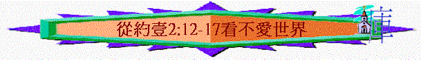

不愛世界的勸勉
經文:約壹2:12-17
引言:
2:15提及不要愛世界,有沒有見過一些基督徒他們貪愛世界而離開了主?
作者在此段強調一個真正有永生的人不應愛世界，如何勸勉？
一.原有生命的肯定(2:12-14)
1.2:12-13約翰分別怎樣稱味信徒?
2. 你認為「小子們」「父老」「少年人」在靈程上及心態行為上有什麼分別? 你認為自己現屬那個階段?
3.2:12提到小子門有什麼特質? 對一個初信者來說,他通常在信仰的改變上最感受到是什麼事?
4.得赦免是現在或還是過去式? 代表什麼真理? 過往神曾赦免你什麼罪?
5.2:13又提到父老,他們比初信者更認識什麼事? 從起初原有指誰?
6.你信了主已有一段日子,你在這幾年更深認識主什麼事?
7.2:13又提到少年人有什麼值我得約翰欣賞的地方? 惡者指誰? 2:14又提到少年人靠什麼可勝惡者?
8.有沒有一些金句時常提醒你不犯罪的?
9.2:13及2:14 是否一些話重覆? [曾]代表什麼? 他們以前及現今有沒有改變?
10.既然一個信徒已從世界出來,得赦免、認識神、得勝惡者,他們以前及現在也是如此,他應不應再走回世界的路?
二.不愛世界的勸勉
1.2:15有什麼勸勉?
2.為何信徒不要愛世界? 你同意嗎? 雅4:4怎說?
3. 2:16又指世界的事是否從神來的?
4.世界的事是指什麼事?
5.肉體的情慾指什麼事? 人有七情六慾有什麼不妥的地方? 西3:5有什麼補充?
6.眼目的情慾又指什麼事? 神造人的眼睛給人看美麗的事,為何有不妥地方? 太5:28又有什麼補充?
7.今生的驕傲又指什麼事? 人為著自己的成就而感自豪有何不妥? 羅1:21-23又有什麼補充?
8.你覺得以上三樣事情:肉體的情慾、眼目的情慾、今生的驕傲,那樣最令基督徒跌倒?
9.有沒有見過/聽過一些信徒因為以上的事而跌倒?
10.2:17 世界的事會最終怎樣? 什麼事情是永恆的? 對我們有什麼提醒?
總結:今日信徒為何須要不愛世界?
今次查經對我們有什麼幫助/分享你的領受